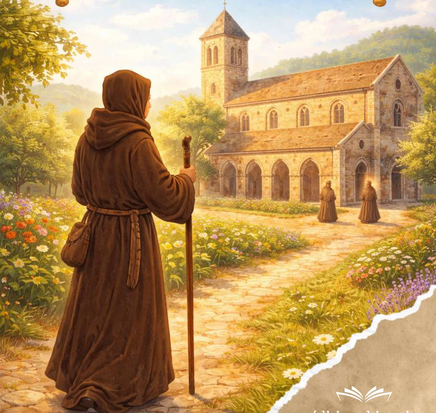

Histoire CM1 Moyen Âge Séance 9
La journée
d’un moine
Entre dans l’abbaye de Cluny et découvre la vie des moines au Moyen Âge.

Lis et mémorise, puis clique sur « Je suis prêt » pour répondre de mémoire. Réussis toute la mission sans erreur et sans aide, puis clique sur « Vérifier ». Après une erreur ou une aide, utilise « Recommencer ».